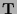
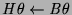

We define models for the completion of a program. First, negation is
defined by
. The existential quantification of a closed
formula is  if any instance is ,
if all instances are , and  otherwise.
otherwise.
An interpretation is a model of if for all head instances , if is T then is T and if is F then is F in the interpretation.
That is, we avoid clause instances of the form
,
,
and
 .
The first two cases can cause unsoundness for definite clauses, as
discussed earlier. The last two cases can cause unsoundness with
negation as failure. Note that we only consider instantiation of head
variables and use existential quantification in the bodies. We allow
the case where the instance of
.
The first two cases can cause unsoundness for definite clauses, as
discussed earlier. The last two cases can cause unsoundness with
negation as failure. Note that we only consider instantiation of head
variables and use existential quantification in the bodies. We allow
the case where the instance of  is and some but not
all corresponding instances of
is and some but not
all corresponding instances of  are (corresponding
to a true atom with a legitimate proof and one or more suspect proofs
which use inadmissible or false atoms). Adapting the definite clause
model definition in a simpler way results in a stronger definition of a
model, unnecessarily rejecting some programs for a given interpretation.
are (corresponding
to a true atom with a legitimate proof and one or more suspect proofs
which use inadmissible or false atoms). Adapting the definite clause
model definition in a simpler way results in a stronger definition of a
model, unnecessarily rejecting some programs for a given interpretation.
To summarise, the declarative semantics we propose for logic programs is Clark's completion with Kleene's strong three-valued logic used for the right sides of the arrow and the following truth table used for the arrow.
| T | F | I | |
|---|---|---|---|
| T | T | F | F |
| F | F | T | F |
| I | T | T | T |
The model intersection properties stated earlier do not generally hold
for disjunctive normal programs. We define strong models of completions
in the typical way (see [Apt and BolApt and Bol1994]), additionally avoiding clauses
of the form
and
 :
:
Our intended interpretation of merge/3 is not a strong model even if extra tests are added. Clauses such as merge([], Bs, Bs) :- sorted_list(Bs) have instances where the head is I and the body is F. Strong models must precisely specify the behaviour of all predicates.